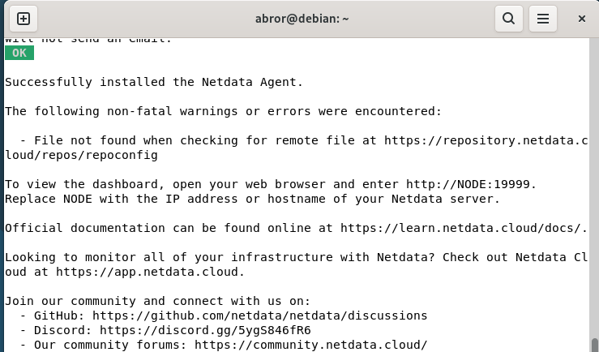
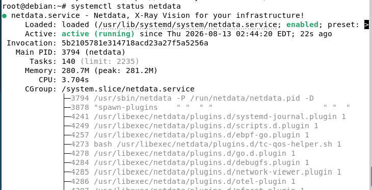
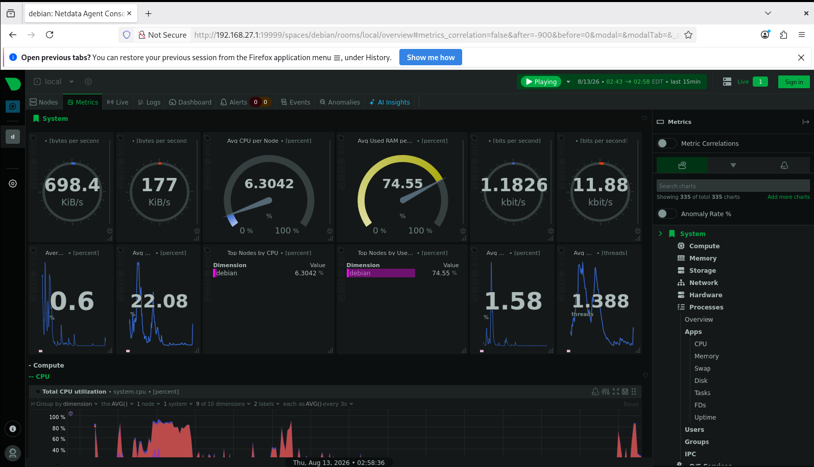

Instalasi & Konfigurasi Netdata
Netdata adalah tool monitoring real-time yang menampilkan penggunaan CPU, RAM, disk, dan network dari sebuah server dalam bentuk dashboard interaktif. Jobsheet ini mendokumentasikan instalasi Netdata di Debian 13 menggunakan script resmi kickstart.sh, karena package netdata tidak tersedia langsung di repository bawaan Debian.
1. Install curl
Netdata disediakan lewat script instalasi otomatis yang diunduh menggunakan curl. Pastikan curl sudah terpasang:
| # apt install curl -y |
|---|

Proses instalasi curl berjalan sampai selesai.
2. Download Script Kickstart Netdata
Unduh script instalasi resmi dari Netdata:
| # curl https://get.netdata.cloud/kickstart.sh > /tmp/netdata-kickstart.sh |
|---|

Download berhasil 100% — script kickstart siap dijalankan.
⚠ Sempat gagal: "Could not resolve host" Pada percobaan pertama, perintah curl di atas gagal dengan error 'Could not resolve host: get.netdata.cloud'. Penyebabnya: DNS resolver server ini sudah dikunci mengarah ke DNS server sendiri (BIND9, dari jobsheet DNS Server sebelumnya) yang hanya mengenal domain lokal nazilabror.com dan belum bisa menerjemahkan domain publik. |
|---|
3. Diagnosa dengan dig
Untuk memastikan letak masalahnya, dilakukan pengecekan langsung ke DNS server sendiri:
| # dig get.netdata.cloud @192.168.27.1 |
|---|

Hasil status SERVFAIL — DNS server sendiri belum bisa menjawab domain publik.
4. Tambahkan Forwarders & Nonaktifkan DNSSEC Validation
Solusinya bukan mengganti resolver, melainkan membuat DNS server sendiri meneruskan (forward) query yang tidak dikenalinya ke DNS publik. Edit file konfigurasi:
| # nano /etc/bind/named.conf.options |
|---|
Tambahkan baris forwarders dan dnssec-validation no; di dalam blok options { }:

Isi named.conf.options setelah ditambahkan forwarders ke 8.8.8.8 / 8.8.4.4 dan dnssec-validation dimatikan (mengatasi SERVFAIL akibat validasi DNSSEC yang gagal di jaringan virtual).
Simpan dan restart service BIND9 agar konfigurasi baru diterapkan:
| # systemctl restart bind9 |
|---|

Restart berhasil tanpa output — tandanya normal.
5. Jalankan Script Instalasi
Setelah DNS server bisa resolve domain publik, jalankan script kickstart yang sudah diunduh:
| # sh /tmp/netdata-kickstart.sh |
|---|
Proses instalasi Netdata Agent dimulai.

Instalasi berhasil — "Successfully installed the Netdata Agent." Dashboard bisa diakses lewat http://NODE:19999.
6. Cek Status Service Netdata
| # systemctl status netdata |
|---|

Status active (running) berwarna hijau menandakan Netdata sudah berjalan sebagai service.
7. Akses Dashboard Netdata
Buka browser dan akses http://192.168.27.1:19999 (sesuaikan dengan IP server). Saat pertama kali dibuka, akan muncul ajakan Sign-in ke Netdata Cloud — pilih "Skip and use the dashboard anonymously" karena monitoring lokal sudah cukup untuk kebutuhan jobsheet ini.

Dashboard Netdata menampilkan metrics real-time: CPU, RAM, network, dan proses sistem — tanda instalasi berhasil sepenuhnya.